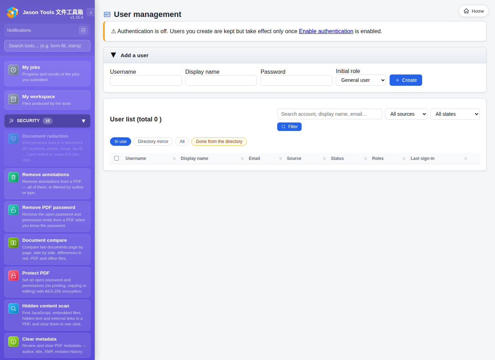
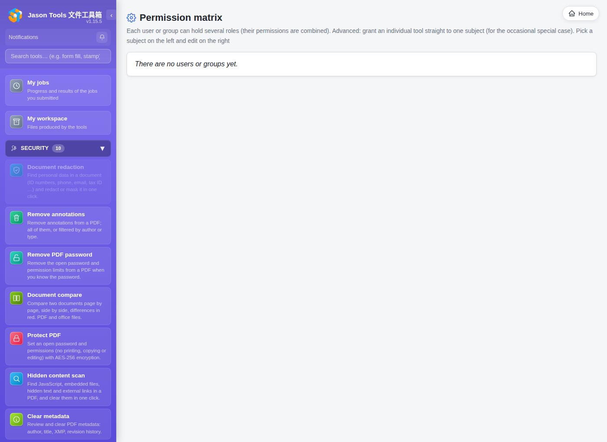
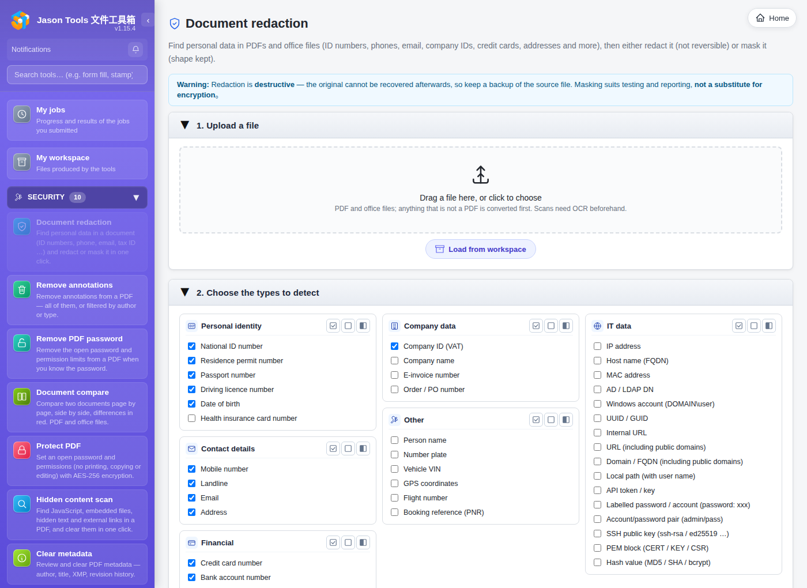
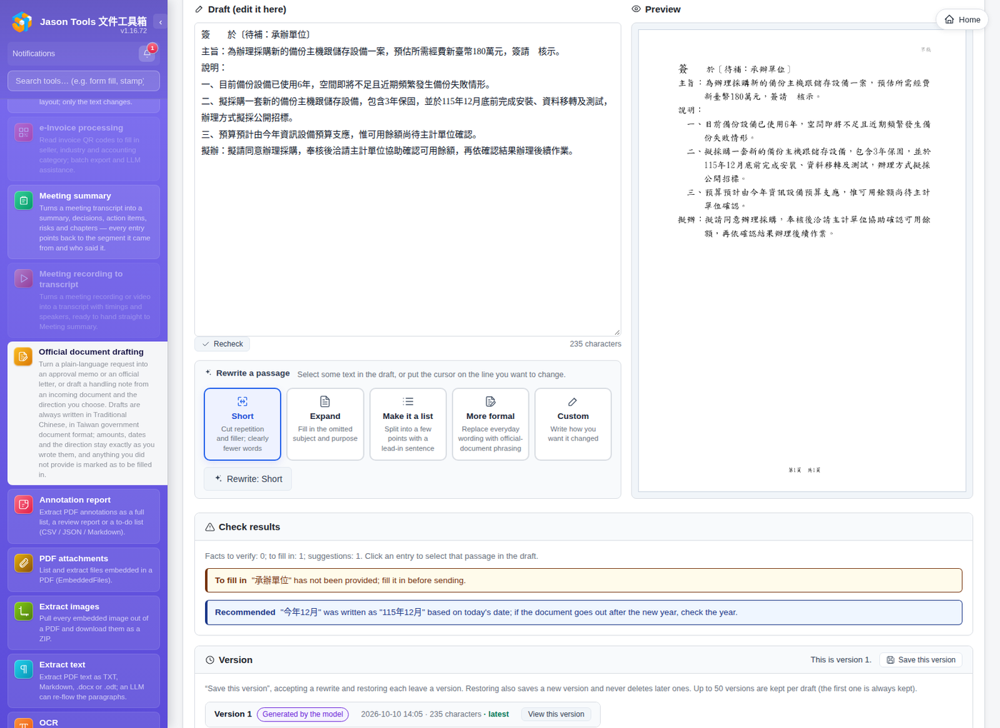

Compliance support: ISO/IEC 27001:2022 and ISO/IEC 42001:2023
ISO/IEC 27001:2022 (information security management) and ISO/IEC 42001:2023 (AI management) certify an organization's management system, not software. This page lists the controls Jason Tools Document Toolbox (the tool) already provides, how an organization uses them, and where the records are kept, as a reference for building the management system and preparing audit evidence.
Every item has been checked against what the code actually does; settings are referred to by their admin page names. Each section lists the ISO/IEC 27001:2022 and ISO/IEC 42001:2023 clauses and Annex A controls it relates to; the full mapping is in section 3, Clause and control mapping.
1. ISO/IEC 27001:2022 Information security
1.1 Authentication
| Provided by the tool | What the organization does, and the records |
|---|---|
| Local accounts, LDAP, Active Directory, and OIDC and SAML single sign-on (alongside local accounts) | Connect the company directory or identity provider under "Authentication" and "SSO"; account lifecycle is then managed in the directory |
| Local account passwords are stored as salted scrypt hashes, never in plain text | With a company directory or single sign-on, passwords are managed by the directory or identity provider |
| Two-step verification (TOTP); always required for auditors signing in with a password | Require users to enable it per policy; create separate auditor accounts with two-step verification |
| Lockout after failed sign-ins: 5 failures for one account or 20 from one IP within 10 minutes locks for 15 minutes (adjustable by the administrator) | Lockouts and unlocks are written to the audit log (login_fail, account_locked, user_unlock) |
| Sign-ins last 7 days, or 30 days with "Remember me"; the administrator can end all of an account's sign-ins at once | Adjust the duration per policy; end all sign-ins first when an account may be compromised |

1.2 Account lifecycle
| Provided by the tool | What the organization does, and the records |
|---|---|
| Disabling an account ends all of its sessions immediately | Disable accounts in the leaver and mover process; the audit log has user_update |
| With authentication enabled, API tokens owned by a disabled or deleted account are refused | No usable access remains even if the tokens are not revoked separately |
| Directory sync can automatically disable accounts that were disabled or removed in the directory (off by default; a run that would change more than 20% is aborted as a whole) | Turn it on in the scheduled directory sync under "Groups"; each run records user_auto_disable |
| Deleting an account also deletes its workspace files | The audit log has user_delete |
1.3 Access control and separation of duties
| Provided by the tool | What the organization does, and the records |
|---|---|
| Each tool is granted through roles, assignable to people, groups or AD organizational units (OU); built-in roles include administrator, general user, records, finance, sales, and legal and security | Design roles by job; the "Permission matrix" page shows who can use which tools |
| Auditor role: can only view the audit log and history, cannot use any tool; assigning it removes all other roles | Auditing and administration are done by different people |
| Form-filling, stamp and watermark history files and upload records are visible to auditors only, not to administrators | Every auditor view is written to the audit log (auditor_view) |
An administrator reading another user's files, job results or official document cases is written to the audit log (admin_file_override) | Review these records regularly |
Every role and permission change is written to the audit log (perm_change, role_*, user_update and others) | For access reviews, keep the role and permission settings of the day with the settings export |

1.4 Isolation between users
Uploaded files, background jobs and their results, My workspace, official document cases, meeting summaries and transcripts all record their owner. Other accounts cannot view, download, cancel or change them; guessing another user's IDs is always refused. Automated tests check these rules one by one (see TEST_PLAN_SECURITY.md).
1.5 Audit log
| Provided by the tool | What the organization does, and the records |
|---|---|
| Records successful and failed sign-ins, lockouts, sign-outs, account, group and role changes, permission changes, settings changes, tool use, downloads of results, administrators reading other users' files, auditor views, database backups and corruption, and retention cleanup | The "Audit log" page filters by user, event type and time, and exports CSV |
| Tool use records only the file name, size, action and result, never the file content | Keeps logging to the minimum needed |
Downloads of results (My jobs, a tool's result page, the workspace) are written to file_download: account, source IP, file name and size. The same person downloading the same file within five minutes is recorded once; previews and thumbnails are not recorded | To find when and by whom a file left the system, filter by the event type file_download |
For calls made with an API token, tool-use and download records also name the token (via: api_token), and the account recorded is the token's owner | Assign every token to a dedicated account and give it a recognisable name |
| The web interface cannot edit or delete audit records; they are only cleaned up by the retention period, and changing that period is itself recorded | Set the retention period per policy (90 days by default) |
Forwarding to a SIEM: syslog (RFC 5424), CEF and GELF, to several destinations at once; failed sends are retried automatically and a local audit_forward_failed record is written | Configure it under "Log forwarding" and keep long-term records in the SIEM |
1.6 Data retention and deletion
The following data has a configurable retention period ("File retention / cleanup" page), cleaned up automatically every 6 hours; administrators can also clean up immediately:
| Data | Default retention |
|---|---|
| Temporary uploads and outputs in progress | 2 hours |
| Background job results | 24 hours |
| Job records | 30 days |
| My workspace (set under "Workspace settings") | 24 hours |
| Form-filling, stamp and watermark history | 365 days each |
| Official document cases (deleted cases count from the deletion date) | 365 days |
| Original recordings uploaded for meeting transcription (never while still being transcribed) | 30 days |
| Ride receipts | 365 days |
| Audit log | 90 days |
The "System status" page lists each user's current file count and storage, with a breakdown by category.
1.7 Protection of secrets
Keys for the LLM servers and the embedding service, the speech service key, the OIDC client secret and SAML private key, and the passwords and tokens of notification channels are stored encrypted (Fernet); the key file is readable by the service account only.
1.8 Isolation of document processing
| Provided by the tool |
|---|
| Every Office conversion uses a fresh throwaway profile with macro execution disabled |
| Conversions have a time limit and are ended together with all child processes on timeout; they run at lower priority on limited CPU cores so the web interface stays responsive |
| The PDF hidden-content scan parses files in a separate process |
| Background jobs queue by available memory and a concurrency limit, so too many files at once cannot bring the service down |
| Damaged files get an error message, never a server error |
Linux installations run under a dedicated service account with systemd protections (NoNewPrivileges, PrivateTmp, ProtectSystem=strict, ProtectHome); the program directory is read-only to the service itself |
1.9 Tools for sensitive data
- Document de-identification: redaction also clears the image pixels inside the redacted area, so the output cannot be restored (including scans and OCR output).
- Text de-identification, metadata cleanup, hidden-content scan, PDF password protection.
- Watermark can add text such as a classification level to a document; the restricted-use stamp in Stamps and signatures marks an ID copy as valid only for a stated purpose.

1.10 Backup and recovery
| Provided by the tool | What the organization does, and the records |
|---|---|
| The user and permission database and the audit log database are hot-backed up daily, keeping 7 copies | Copy db_backups to another host or backup system |
Command-line tools jtdt db-check, jtdt db-backup and jtdt db-restore check and restore even when the web interface is down | Rehearse restores regularly and record the results |
Upgrading with jtdt update first checks disk space and backs up the data directory (keeping 3 copies); a failed upgrade restores the previous program version | Match upgrade records against the CHANGELOG |
| "Settings backup / import": export all site settings and import them on another host | Use it when moving or rebuilding (steps in OPS.md) |
1.11 Web and transport security
- Every write requires a CSRF token; the content security policy (CSP) restricts scripts and styles with a per-request nonce.
- HSTS is sent over HTTPS; the sign-in cookie is
HttpOnly, and alsoSecureover HTTPS. - The deployment guide recommends serving HTTPS through a reverse proxy, with the service bound to localhost only (see
OPS.md).
1.12 Secure development and testing
- Every release is scanned with OWASP ZAP (signed out and signed in), and ships only when High, Medium and Low findings are all 0.
- Static analysis with bandit and OWASP Top 10 regression tests; the security test items are listed in
TEST_PLAN_SECURITY.md. - The source repository is scanned with CodeQL on every push and weekly, and Dependabot checks dependencies for known vulnerabilities every week.
- Every release is recorded in
CHANGELOG.md.
2. ISO/IEC 42001:2023 Artificial intelligence
2.1 AI inventory
| Provided by the tool | What the organization does, and the records |
|---|---|
| LLM features are off by default and are turned on by the administrator under "LLM settings" | Use the "LLM settings" page as the AI inventory: the tools turned on, the models and the servers |
| Every tool that calls an LLM is listed under "LLM settings": sentence translation, document translation, text extraction (paragraph rebuild), form auto-fill (verification), document and text de-identification (extra detection), meeting summary, official document drafting, word count, annotations, document comparison, pre-submission check, OCR, and e-invoices | Approve per purpose; leave unneeded tools off |
| Each tool can be assigned its own LLM server; if that server is unavailable the tool stops and never sends to another server | Assign on-premises servers to tools that handle confidential documents |
| OCR runs locally by default (EasyOCR); a separate GPU OCR server is optional and off by default | Confirm where the server is before turning it on |
With authentication enabled, every use of an AI tool is written to the audit log (tool_invoke: account, time, tool, file name), and so is every change to LLM settings (settings_change, including each tool's model and server). The audit log does not record what was sent to the model | Use the audit log to track AI usage and setting changes; every tool is described in LLM.md |
| Meeting transcription uses a separately deployed speech service: it fetches the recording through a signed link valid for 2 hours, and after the transcript is retrieved and saved the service is told to delete it (within 24 hours at most) | Record the speech service's location and retention in the data-flow records |
2.2 Safeguards against AI errors
| Features | Provided by the tool |
|---|---|
| Official document drafting | The format is laid out by the program and the model writes only the content; amounts, quantities, dates, times, law names, article numbers, document numbers and approval claims in the draft are checked, and anything without a source is flagged; missing information is marked as a placeholder; references show their purpose and source, and only "substantive basis" items count as a basis for the draft; every change is saved as a new version |
| Meeting summary | Every decision, action item and risk must point back to transcript segments, and items that cannot are dropped; the summary is written only from verified items, and its numbers and English words are checked against the transcript |
| Translation | Source and translation are shown sentence by sentence or side by side for review |
| OCR correction | Lines are aligned and compared; lines whose count or length differs too much keep the original OCR text |
| Evaluation tools | The source includes evaluation tools for official document drafting and meeting summaries (tools/official_doc_eval/, tools/meeting_eval/) that measure omissions and fabrication; rerun them on your own cases before switching models |
| Prompt injection | Official document drafting removes instructions aimed at the AI from documents before they reach the model and warns the user; official document drafting and meeting summary place document content in a data section and state that it is data, not instructions |

2.3 What the organization does
- Set an AI use policy: which tools may be used, and which kinds of document may go to which model server (clause 5.2, control A.2.2).
- Make the tool's checks part of human review: the check results in official document drafting, the segment citations in meeting summaries, and the side-by-side translations. Official documents are used only after the person responsible has confirmed them (control A.9.2).
- Before changing models or upgrading, rerun a set of your own representative documents and keep the results as a change record (control A.6.2.4).
- For each use, assess who could be affected by errors (recipients of documents, data subjects, staff) and include it in the AI impact assessment (clauses 6.1.4 and 8.4, controls A.5.2 to A.5.5).
3. Clause and control mapping
The tables below list the clauses and Annex A controls that the tool's features support. When writing the Statement of Applicability (ISO/IEC 27001:2022 clause 6.1.3), use them to mark the parts the tool implements. A mapping only means the tool provides features that support the clause or control; whether you conform is decided by your management system and its audits. Control names follow the published standards, whose text takes precedence.
ISO/IEC 27001:2022 clauses
| Clause | Provided by the tool | Section of this document |
|---|---|---|
| 7.5 Documented information | The audit log exports to CSV; the settings backup export keeps the settings as they were; every release's changes are recorded in CHANGELOG.md | Audit log, Backup and recovery, Secure development and testing |
| 9.1 Monitoring, measurement, analysis and evaluation | The audit log filters by user, event type and time; the System status page lists each user's storage use | Audit log, Data retention and deletion |
| 9.2 Internal audit | The auditor role has read-only access to the audit log and history files, and each viewing is itself recorded | Access control and separation of duties |
The other clauses (4 Context of the organization, 5 Leadership, 6.1.2 Information security risk assessment, 6.2 Objectives, 7.1 to 7.4 Resources, competence, awareness and communication, 8 Operation, 9.3 Management review, 10 Improvement) are handled by your management system.
ISO/IEC 27001:2022 Annex A controls
| Control | Provided by the tool | Section of this document |
|---|---|---|
| A.5.3 Segregation of duties | The auditor role can only view the audit log and history and cannot use tools; assigning it removes all other roles; only auditors can view history files | Access control and separation of duties |
| A.5.13 Labelling of information | Watermarks add text such as a classification level; the restricted-use stamp states what a document may be used for | Tools for sensitive data |
| A.5.14 Information transfer | Before sending, encrypt with PDF password protection and remove what should not leave with metadata removal and hidden content scan | Tools for sensitive data |
| A.5.15 Access control | Each tool is granted by role; uploads, jobs, workspaces and official document cases are separated by owner | Access control and separation of duties, Isolation between users |
| A.5.16 Identity management | Local accounts, LDAP, AD, OIDC and SAML; directory sync can disable accounts that were disabled or removed in the directory | Authentication, Account lifecycle |
| A.5.17 Authentication information | Local passwords are stored as salted scrypt hashes; keys and passwords for integrated services are stored encrypted | Authentication, Protection of secrets |
| A.5.18 Access rights | Disabling an account ends its sessions and API tokens at once; review access in the permission matrix; permission changes are written to the audit log | Account lifecycle, Access control and separation of duties |
| A.5.33 Protection of records | The audit log cannot be edited or deleted from the web interface and is only cleared by its retention period; it can be forwarded to a SIEM for long-term retention; the databases are hot-backed up daily | Audit log, Backup and recovery |
| A.5.34 Privacy and protection of PII | Document and text de-identification and the restricted-use stamp; tool use records file names, not content; each kind of data is cleared by its retention period | Audit log, Data retention and deletion, Tools for sensitive data |
| A.8.2 Privileged access rights | An administrator reading another user's files writes admin_file_override; administrators cannot view history files | Access control and separation of duties |
| A.8.3 Information access restriction | Other accounts cannot view, download, cancel or change it; guessing another user's data by ID is always refused | Isolation between users |
| A.8.5 Secure authentication | Two-step verification, lockout after failed logins, session lifetime, and ending all of an account's sessions at once | Authentication |
| A.8.6 Capacity management | Per-user usage on the System status page; conversions are limited to set CPU cores; background jobs queue by available memory | Data retention and deletion, Isolation of document processing |
| A.8.7 Protection against malware | Office conversions run with macros disabled and a throwaway profile; the PDF hidden content scan parses in a separate process | Isolation of document processing |
| A.8.8 Management of technical vulnerabilities | CodeQL and Dependabot check the code and dependencies for known vulnerabilities; fixes are recorded in CHANGELOG.md | Secure development and testing |
| A.8.9 Configuration management | Settings backup export and import; the Linux service runs with systemd protection settings | Isolation of document processing, Backup and recovery |
| A.8.10 Information deletion | Each kind of data is cleared automatically by its retention period; deleting an account also deletes its workspace files | Account lifecycle, Data retention and deletion |
| A.8.11 Data masking | Document de-identification (including clearing image pixels) and text de-identification | Tools for sensitive data |
| A.8.12 Data leakage prevention | Metadata removal and hidden content scan; downloads of results write file_download | Audit log, Tools for sensitive data |
| A.8.13 Information backup | Daily hot backups of the databases, 7 kept; jtdt db-backup and jtdt db-restore; the data directory is backed up before upgrades | Backup and recovery |
| A.8.15 Logging | The audit log (logins, permissions, settings, tool use, downloads and other events) | Audit log |
| A.8.16 Monitoring activities | Audit log forwarding to a SIEM (syslog, CEF, GELF) | Audit log |
| A.8.24 Use of cryptography | Secrets are stored encrypted with Fernet; HSTS and Secure cookies | Protection of secrets, Web and transport security |
| A.8.25 Secure development life cycle | An OWASP ZAP scan and security regression tests run before every release | Secure development and testing |
| A.8.26 Application security requirements | CSRF tokens, CSP nonces and HttpOnly cookies | Web and transport security |
| A.8.27 Secure system architecture and engineering principles | A parser runs in a separate process; a dedicated service account and systemd protection; binding to localhost behind a reverse proxy is recommended | Isolation of document processing, Web and transport security |
| A.8.28 Secure coding | CodeQL code scanning and bandit static analysis | Secure development and testing |
| A.8.29 Security testing in development and acceptance | OWASP ZAP (signed out and signed in) and OWASP Top 10 regression tests | Secure development and testing |
| A.8.32 Change management | Upgrading with jtdt update checks disk space and makes a backup first, and rolls the program back if the upgrade fails | Backup and recovery |
The other controls (for example 5.1 Policies for information security, 5.19 to 5.23 supplier relationships, the people controls in section 6 and the physical controls in section 7) belong to your management system; the tool provides no features for them.
ISO/IEC 42001:2023 clauses
| Clause | Provided by the tool | Section of this document |
|---|---|---|
| 6.1.3, 8.3 AI risk treatment | Mechanisms such as the fact checks in official document drafting and the citation checks in meeting summaries can be listed as risk treatment | Safeguards against AI errors |
| 6.1.4, 8.4 AI system impact assessment | The LLM settings page lists the enabled tools, models and servers, which sets the scope of the assessment | AI inventory |
| 7.5 Documented information | LLM.md describes how each tool uses an LLM; every release's changes are recorded in CHANGELOG.md | AI inventory |
| 9.1 Monitoring, measurement, analysis and evaluation | The tool_invoke and settings_change events in the audit log | AI inventory |
The other clauses (4 Context of the organization, 5 Leadership including 5.2 AI policy, 6.1.2 and 8.2 AI risk assessment, 6.2 AI objectives, 9.2 Internal audit, 9.3 Management review, 10 Improvement) are handled by your management system.
ISO/IEC 42001:2023 Annex A controls
| Control | Provided by the tool | Section of this document |
|---|---|---|
| A.3.2 AI roles and responsibilities | Only administrators can enable the LLM and choose models and servers; roles control who can use which AI tool | AI inventory |
| A.4.2 Resource documentation | The LLM settings page records each tool's model and server; changes are written to the audit log | AI inventory |
| A.4.3 Data resources | Datasets in the official document knowledge base are versioned; imports of government open data record the source and licence | Safeguards against AI errors |
| A.4.4 Tooling resources | The LLM, embedding model, OCR engine and speech service are configured separately | AI inventory |
| A.4.5 System and computing resources | Each tool can be pinned to an LLM server; the GPU OCR server is optional | AI inventory |
| A.6.2.4 AI system verification and validation | Evaluation tools for official document drafting and meeting summaries that measure omissions and fabrication | Safeguards against AI errors |
| A.6.2.5 AI system deployment | LLM features are off by default; if a pinned server is unavailable the tool stops instead of sending to another server | AI inventory |
| A.6.2.6 AI system operation and monitoring | Check results are shown with each draft; the audit log records AI tool use and setting changes | AI inventory, Safeguards against AI errors |
| A.6.2.7 AI system technical documentation | LLM.md and the API manual | AI inventory |
| A.6.2.8 AI system recording of event logs | tool_invoke records who used which AI tool and when; settings_change records changes to LLM settings | AI inventory |
| A.7.5 Data provenance | References in official document drafting show their source dataset and origin; every meeting summary item points back to transcript segments | Safeguards against AI errors |
| A.8.2 System documentation and information for users | The interface marks features that use AI; check results, missing-information markers and segment citations are shown to the user | Safeguards against AI errors |
| A.9.2 Processes for responsible use of AI systems | Check results in official document drafting, segment citations in meeting summaries and side-by-side translations support human review | Safeguards against AI errors |
| A.9.4 Intended use of the AI system | Roles limit which AI tools can be used; tools handling highly confidential documents can be pinned to an on-premises server | AI inventory |
| A.10.3 Suppliers | A tool pinned to a server does not fall back to another server; the speech service fetches recordings through signed URLs valid for 2 hours and is told to delete them once the transcript is saved | AI inventory |
The other controls (A.2 Policies related to AI, A.5 Assessing impacts of AI systems, A.6.1.2 and A.6.1.3 objectives and processes for development, A.7.2 to A.7.4 and A.7.6 data, A.8.3 to A.8.5 external reporting and communication, A.9.3 Objectives for responsible use, A.10.2 and A.10.4 allocating responsibilities and customers) are handled by your management system.
4. Deployment checklist
- Turn on authentication with the company directory or single sign-on; create separate auditor accounts with two-step verification.
- Set roles and tool permissions by job; keep the settings of each access review with the settings export.
- Forward the audit log to a SIEM, and set retention periods per policy.
- Serve HTTPS through a reverse proxy, with the service bound to localhost only.
- Copy database and settings backups to another host, and rehearse restores regularly.
- Before turning on the LLM, decide each tool's server, and use the "LLM settings" page as the AI inventory.
- When upgrading, keep the matching
CHANGELOG.mdentry as the change management record.